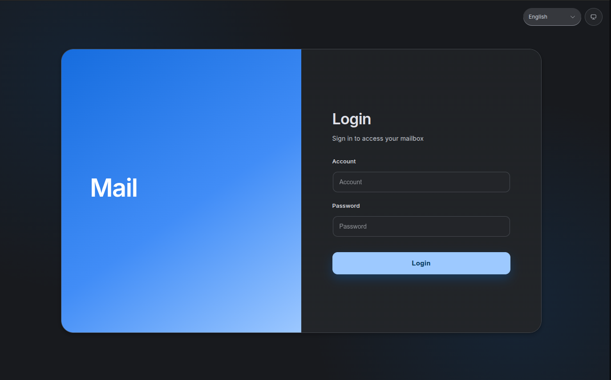

開源 / 三個專案
自己網路上的
軟體。
Android 的 Hysteria 2 用戶端、自架的 AmneziaWG 面板，以及自有網域的郵件伺服器。 都跑在自己控制的機器上；原始碼在 GitHub、授權 AGPL-3.0，各專案頁面會先說清楚需要準備什麼。
編號
專案
技術
官網
01
Hy2droid
Android 原生的 Hysteria 2 用戶端。貼上連結或掃 QR，就能走 IPv4 或 IPv6 的全通道上網。需要 Android 11 以上與一台 Hysteria 2 伺服器；不用 root，也不需要 Google Play 服務。
AndroidKotlin
AGPL-3.0
 02
02
AmneziaWG Web UI
自架的 AmneziaWG 3.1 面板，單一約 35 MB 的 Docker image：伺服器、用戶端、.conf 與 vpn:// 匯出、QR 與即時流量。需要一台裝好 Docker、Compose 2.24 以上的 Linux 主機和對外 IPv4。
自架Docker · Go
AGPL-3.0
 03
03
iMail
自有網域的郵件伺服器，單一 Go binary：SMTP、IMAPS、POP3S、瀏覽器信箱、管理台與逐網域憑證。需要 Docker、可控制 DNS 的網域，以及供應商沒有封鎖的 25 埠。
郵件Go · Docker
AGPL-3.0
